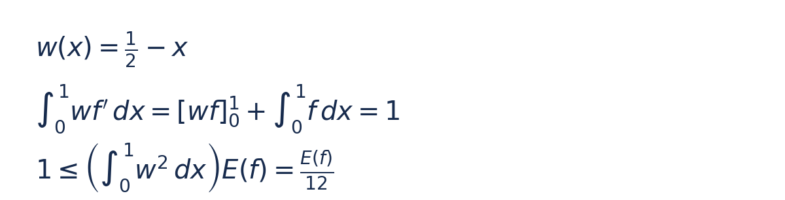
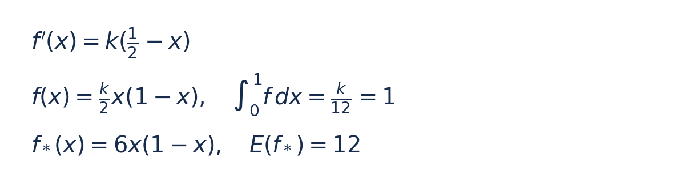
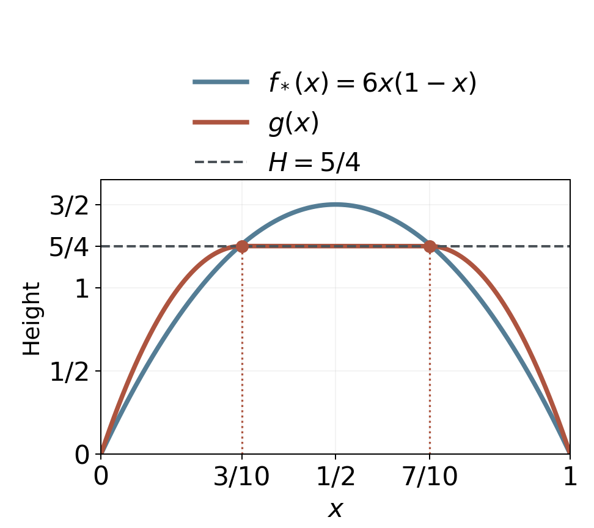
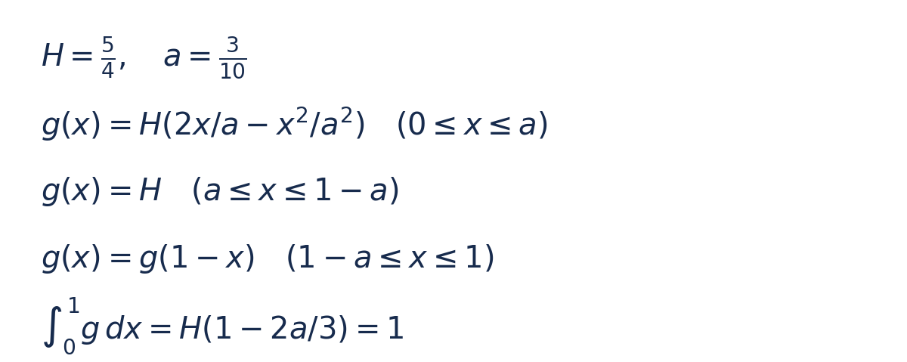
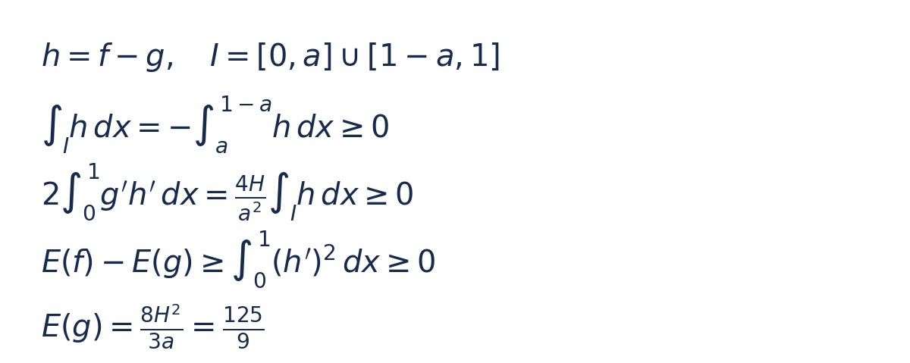

微积分与优化 · 中等偏难 · 建议先独立思考 25–40 分钟；解答阅读约 10 分钟。需要会求导、定积分、分部积分与柯西–施瓦茨不等式，关键步骤会逐项说明。
主问题据 UCL MATH0043 课程题改编；高度限制追问与中文解答为原创组织。不对应已核实的公司真题。
主问题
选择一个定义在 [0,1] 上的实值函数 f，要求 f 与一阶导数 f′ 在整个区间上连续（即 f 属于 C¹；端点导数取单侧值）。不要求二阶导数处处存在。这些条件也保证下面的斜率平方积分有限。
另有三个条件：f(0)=0，f(1)=0，∫₀¹f(x)dx=1。题目不额外要求 f 非负，因此“面积”准确指带符号积分。单位区间与面积 1 都是教学设定。
用 E(f)=∫₀¹[f′(x)]² dx 衡量变化程度：把每处斜率的平方沿全区间累积。求 E 的最小值及达到它的函数，并证明最优函数唯一。这里不优化曲线长度、最大斜率或二阶导数。
独立追问
保留主问题的全部条件，再要求每个 x∈[0,1] 都满足 f(x)≤5/4。重新求 E(f) 的最小值和唯一最优函数，并给出覆盖所有可行函数的证明。可行函数不预设对称。
三级提示：需要时展开
三级提示
提示一级：面积条件用到了 f，目标用到了 f′。能否借助端点为零，把面积改写成 f′ 与一个简单权重函数的乘积积分？
提示二级：选择导数为 −1 的权重，用分部积分连接二者，再用柯西–施瓦茨。求出下界后，检查等号条件能否反推出合法函数。
提示三级：追问先检查主问题的解是否越过上限。构造满足上限的候选后，把任意可行函数写成“候选＋差值”，展开斜率平方；利用面积相同和贴住上限区间的差值符号判断交叉项。
完整解答，想好再看
完整解答，想好再看
1 把面积转成斜率的信息
把权重记为 w(x)=1/2−x。分部积分公式是 ∫wf′=[wf]₀¹−∫w′f。这里 w′=−1；两端 f=0 让边界项 [wf]₀¹=w(1)f(1)−w(0)f(0) 为零；剩下的就是题目给出的面积 1。


柯西–施瓦茨说：两函数乘积积分的平方，不超过各自平方积分的乘积。左侧刚好是 1，权重的平方积分是 1/12，故每个可行函数都满足 E(f)≥12。
为什么把权重中心选在 1/2？任何 c−x 都能做同样的分部积分，但其平方积分为 (c−1/2)²+1/12。取 c=1/2 让它最小，所得能量下界最强。
2 用取等条件构造答案
在上述不等式中取等，需要 f′ 与 w 成比例，即 f′(x)=k(1/2−x) 在整个区间上成立。积分并用 f(0)=0，得到 f(x)=(k/2)x(1−x)；它自动满足另一端为零。面积为 k/12，因此 k=12。


直接代入：f*(x)=6x(1−x) 的面积为 1，导数为 6−12x，斜率平方积分为 12。统一下界被它达到，最优性成立。任何达到 12 的函数都必须满足刚才的等号条件；两函数的导数相同，函数就只差常数，而端点又固定常数为零，因此最优函数在整个区间上唯一。
3 高度受限后，怎样找候选
主问题的解在 x=1/2 处达到 3/2，超过 5/4，所以不能继续使用。记新上限 H=5/4。尝试让中间一段保持高度 H，左右各用一段二次曲线连接零端点，并让连接处的斜率为零。
这只是寻找候选的方法，还没有证明最优函数必须对称或必须由这些段组成。接下来的证书会与任意可行函数比较，不限制它的形状。


图中烟蓝线是主问题的解，氧化红线是本节构造的上限解 g；横虚线标出 H=5/4，两个圆点对应 x=3/10、7/10。图像帮助比较形状，最优性仍需下面的证明。
把左侧连接点记为 a。用 q(x)=Ax²+Bx 连接 q(0)=0、q(a)=H、q′(a)=0，解得 q(x)=H(2x/a−x²/a²)。右侧取镜像，中间保持 H。


左侧面积为 2Ha/3，右侧相同，中间为 H(1−2a)。总面积 H(1−2a/3)=1 给出 a=3/10，确实小于 1/2。连接点为 3/10 和 7/10。
左段从零升到 H，右段从 H 降到零，且两段都不越过 H；接到中间时高度为 H、斜率为零。因此 g 与一阶导数都连续，满足题目要求的 C¹ 条件。二阶导数在两个连接点不存在，这不违反题面条件。
4 用任意可行函数检验它
取任意可行 f，令 h=f−g。两者端点和面积相同，所以 h(0)=h(1)=0、∫₀¹h=0。在中间区间 P=[a,1−a]，g 已达到上限 H，而 f≤H，所以 h≤0。记两侧的并集为 I=[0,a]∪[1−a,1]，便有 ∫I h=−∫P h≥0。
展开斜率平方得到 E(f)=E(g)+2∫₀¹g′h′+∫₀¹(h′)²。最后一项非负，关键是交叉项。分三段做分部积分：外端 h=0，中间连接处 g′=0，因此所有边界项都为零。两侧 g″=−2H/a²，中间 g″=0，于是交叉项等于 (4H/a²)∫I h，仍非负。


所以 E(f)≥E(g)，这对非对称函数也成立。若取等，必有 ∫₀¹(h′)²=0，因为 h′ 连续，这迫使 h′ 处处为零，故 h 为常数；再由 h(0)=0 得 h 恒为零。追问的最优函数同样唯一。
5 算出最小能量
左段导数为 (2H/a)(1−x/a)，其中 (1−x/a)² 从 0 到 a 的积分为 a/3；左段能量因此是 4H²/(3a)。右段相同，中段导数为零。总能量 E(g)=8H²/(3a)=125/9，约为 13.8889，高于主问题的 12。
已核对端点、面积、连接斜率与能量；最优性由上述证明给出。
两处常见错误
把主问题曲线超过上限的部分直接截平，会降低面积，破坏面积恰好为 1 的条件。追问必须连两侧一起重新安排。
画出对称候选，或者写出某条必要微分方程，都还没有排除其他函数。主问题靠统一下界与取等条件；追问靠对所有可行 f 成立的非负差值证明。
方法与边界
这题练习两步：先把约束转成能量的统一界，再构造取等对象；新增逐点限制后，用接触区的符号控制能量差。结论依赖本题的端点、带符号面积与斜率平方目标。它不是最短曲线问题，也未建模真实材料的弯曲能。
与固定总量的最小平方修正相比，本题优化整条函数的导数能量，并新增逐点高度限制；与断棒的几何积分、矩约束下的尾概率优化，核心对象和证明环节均不同。
来源与选读
UCL MATH0043 §2：Isoperimetric Problems，Exercise 6：原课程题端点为 1、积分为 2；把原函数减去 1 就得到本主问题。这里补齐了全局最小值与唯一性的证明，追问为新增组织。
Arshak Petrosyan，Purdue MA694A，Lecture 1，§1.1，第 1–2 页：提供导数能量与障碍问题背景。原资料讨论下障碍，本题使用上限，比较差值时不等号方向相反；正文的数值与证明单独推导。